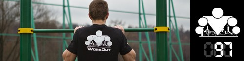

<==== Вернуться к оглавлению

Я реально подумал сейчас, что использование греческого алфавита для нумерации комплексов было небольшой ошибкой))) Тем не менее остается всего 4 дня до конца проекта! Всего 4 дня!!!
Разомнитесь хорошенько, потому что сегодня я подготовил для вас что-то по-настоящему интересное! Мы будем тренировать не только силу, но и координацию!
Начнём с бега в упоре лёжа, 3 подхода по 30-60 секунд с отдыхом 10-15 секунд:
Настало время перейти к силовой части, которую мы продолжаем выполнять в круговом формате. 5 кругов, 3 упражнения, отдых 30-60 секунд.
Упражнение №1. Отжимания с руками на разном уровне. Суть данного упражнения заключается в том, что одна рука у вас стоит на полу, а другая стоит на некотором возвышении над полом (на площадках для уличных тренировок всегда можно найти низкие лавочки или столбы или ещё что-нибудь приспособить). Количество повторений - 10-20.
Упражнение №2. Болгарские сплит-приседы. Так же делаем до тех пор, пока можем выполнять повторения с 100% качеством. Стараемся делать одинаковое количество повторений для каждой ноги, для чего всегда начинаем с более слабой. Внимательно изучите прилагаемое видео:
Как и всегда, старайтесь не просто повторять, а прочувствовать движение и делать его комфортным для себя образом ;) Количество повторений - 10-20.
Упражнение №3. Подтягивания с поочередным подъёмом коленей к груди. Это тот случай, когда проще сделать, чем объяснить на словах. Вы подтягиваетесь одновременно поднимая одно колено к груди, на следующем повторении меняете ногу. Количество повторений? 5-10 в зависимости от уровня подготовки.
======> День 98. ТУРБО комплекс ИТА